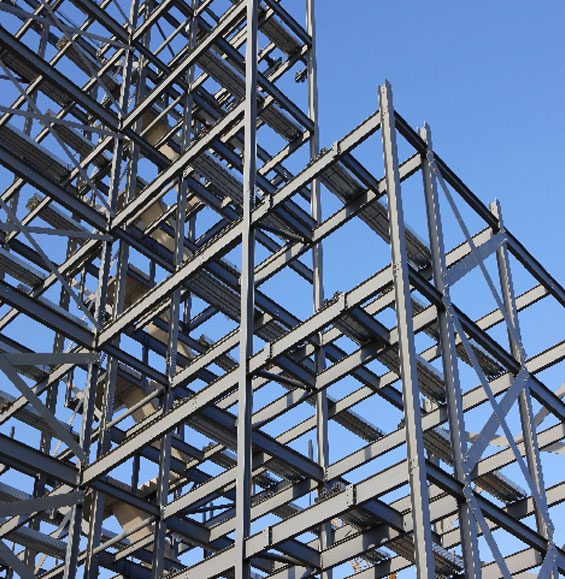

At Terresteel, we design, manufacture, and install custom-engineered steel buildings, prioritising safety, economy, quality & sustainability. The promoters of Terresteel bring over five decades of combined experience in engineering, materials, production planning, and project management within the steel building industry.
Our extensive expertise in the industry enables us to understand your needs, recommend optimal solutions, and deliver safe, economical, high-quality steel buildings.
We optimise material usage and production speed to ensure cost-effectiveness without compromising strength, stability, or durability of the building. This approach results in competitively priced structures that meet the highest standards of quality and longevity.

Steel buildings can be tailored to meet your specific needs, accommodating architectural requirements, irregular shapes, site-imposed conditions, features such as long cantilevers etc.

Thanks to use of advanced software and production techniques, steel buildings can be manufactured off-site in a factory and delivered ready for installation. This expedited process allows for faster project completion compared to traditional structures, resulting in quicker returns on your investment.

Manufactured under stringent quality control in a factory setting, steel buildings are built to your exact specifications. In contrast, conventional buildings, made on-site, are susceptible to quality issues.

Steel structures are adaptable for future expansions and can be disassembled and relocated if necessary, offering a level of versatility that conventional buildings often lack.

With superior strength and quality, a well-maintained steel building can last for decades without any issues.

Steel's unique properties allow for lighter structures that can be designed to be more earthquake-resistant, providing additional safety in seismic zones.
At Terresteel, we specialize in designing and manufacturing high-quality, custom-engineered steel buildings with optimized material usage and efficient production techniques for competitive pricing and fast delivery. Our solutions prioritize safety, economy, and quality, adhering to stringent material and production standards. Utilizing cutting-edge software, we streamline design, detailing, project management, and production planning while ensuring compliance with national and international codes. Committed to innovation, we continuously develop cost- and time-saving systems and ensure that the benefits are passed on to our customers. Our dedication extends beyond project completion with reliable after-sales support.